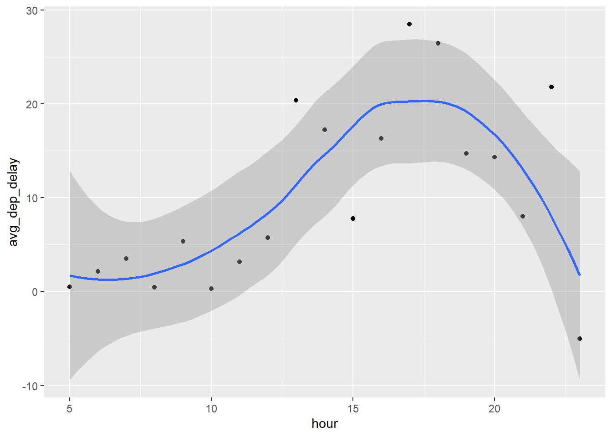

Code
library(tidyverse)
library(nycflights13)
flights |>
filter(arr_delay >= 120)In a
single pipelinefor each condition, find all flights that meet thecondition:
Solution:
Had an arrival delay of two or more hours
library(tidyverse)
library(nycflights13)
flights |>
filter(arr_delay >= 120)
Flew to Houston (IAHorHOU)
flights |>
filter (dest %in% c('IAH', 'HOU'))
Were operated by United, American or Delta
flights |>
filter(carrier %in% c('AA', 'DL', 'UA'))
Departed in summer (July, August, and September)
flights |>
filter(month %in% c(7,8,9))
Arrived more than two hours late but didn’t leave late
flights |>
filter(arr_delay >= 120 & dep_delay <= 120 )
Were delayed by at least an hour, but made up over 30 minutes in flight
flights |>
filter(dep_delay >= 60 & arr_time >=30)Sort
flightsto find the flights with the longest departure delays. Find the flights that left earliest in the morning.
Solution:
flights |>
arrange(desc(dep_delay))# By default, arrange() sorts data in ascending order (A to Z for text, or smallest to largest for numbers).
flights |>
arrange(dep_time)Sort
flightsto find the fastest flights. (Hint: Try including a math calculation inside of your function.)
Solution:
Here the fastest flights aren't necessarily the flights that spent the least amount of time in the air. Based on the question and specially the Hint, we are supposed to calculate the speed of the carriers and then arrange by that speed. I included this remark because at first I thought the solution was to sort byair_timeinstead of calculating speed. That being said, we will calculate the speed of carriers inmiles/minwithout needing to do aconversion of units. We can calculate speed by dividing distance by air_time.
As shown, we did arrange and sort our data without adding a new column/variable (which, if we wanted to, should be speed in this case) by speed of flights. That being said, the fastest flight from New York city on 2013 was on
may,day 25with aspeed of on average ~ 11.73 miles/minute.
flights |>
arrange(desc(distance/air_time))Was there a flight on every day of 2013?
Solution:
The year 2013 had 365 days in total because it was a common year, not a leap year. Therefore, to check if there was a flight on every day of 2013 we should look for all unique month and day pairs. So the answer is
Yessince there are365 unique month-day combinationsin the data.
glimpse(flights |>
distinct(month, day))Which flights traveled the farthest distance? Which traveled the least distance?
Solution:
Before inspecting the data, I would expect to have a
singleflight with the farthest distance. But it turned out there were multiple flights with the same maximum distance across several months of the year (the maximum distance is 4983 miles). And it turns out that there are342flightswith thefarthest distance.(for example, repeated flights from 2 airports that are very far apart)
flights |>
filter(distance == max(distance))when it comes to the flights with the least distance, we simply let the arrange function do the sorting by
defaultwithout introducing thedesc() function. And it turns out that there is asingle flightinjulywith the least distance which is17 miles.
flights |>
filter(distance == min(distance))Does it matter what order you used
filter()andarrange()if you’re using both? Why/why not? Think about the results and how much work the functions would have to do.
Solution:
The order does not change the final output, but it dramatically impacts computational efficiency. Sorting (arrange) is a
heavy operation. It is alwaysbest practiceto usefilter()first to reduce the data-set to the smallest possible size before asking the computer toarrange()it. Doing this prevents the machine from wasting memory sorting thousands of rows that will ultimately be discarded.
The Result: Order Does Not Matter: Mathematically, the final output will be exactly the same. Whether you take all American Airlines flights and then sort them by delay, or sort all flights by delay and then extract the American Airlines ones, the final rows and their order will match perfectly.
The Workload (Execution Time) / Order Matters Immensely: Sorting data (arrange) is one of the most resource-intensive operations a computer can perform. Filtering data (filter) is relatively cheap and fast.
Compare
dep_time,sched_dep_time, anddep_delay.How would you expect those three numbers to be related?
Solution:
dep_timeis the actual departure time of the flight,sched_dep_timeis the scheduled departure time, anddep_delayis the difference between them. Ideally,dep_timeshould equalsched_dep_time + dep_delay. However, in practice, there might be some discrepancies due to data entry errors or rounding.For example, if a flight is scheduled to depart at 10:00 AM (
sched_dep_time) and experiences a 30-minute delay, the actual departure time (dep_time) would be 10:30 AM, and the delay (dep_delay) would be 30 minutes. This relationship holds true in most cases, but data inconsistencies can occur. Below, you find a code that shows the exact number (count) of flights wheredep_delayis perfectly the difference betweendep_timeandsched_dep_time.
Brainstorm as many ways as possible to select dep_time, dep_delay, arr_time, and arr_delay from flights.
Solution:
# Straightforward
flights |>
select(dep_time, dep_delay, arr_time, arr_delay)
# Another way to do it
flights |>
relocate(sched_dep_time,sched_arr_time) |>
select(dep_time:arr_delay)What happens if you specify the name of the same variable multiple times in a
select()call?
Solution:
It simply ignores the duplicates and outputs a data frame with a single column.
What does the any_of() function do? Why might it be helpful in conjunction with this vector?
Solution:
I executed this code using the
any_of()selection helper. While its full potential isn’t entirely obvious in this simple, controlled example, I recognize it was built for robust programming. I look forward to discovering its true utility in future tasks with more unpredictable data-sets.
variables <- c("year", "month", "day", "dep_delay", "arr_delay")
flights |>
select(any_of(variables))Does the result of running the following code surprise you? How do the select helpers deal with upper and lower case by default? How can you change that default?
flights |> select(contains("TIME"))Solution:
The
contains()helper is case-insensitive by default. It will match columns with “TIME” in any case, such as “time”, “Time”, or “TIME”. To change this behavior and make it case-sensitive, you can use theignore.case = FALSEargument inside thecontains()function. For example:select(contains("TIME", ignore.case = FALSE)).
Rename
air_timetoair_time_minto indicate units of measurement and move it to the beginning of the data frame.
Solution:
flights |>
rename(air_time_min = air_time) |>
relocate(air_time_min)Why doesn’t the following work, and what does the error mean?
Solution:
The code doesn’t work because after the
select()function we obtain a new data frame that contains a single column namedtailnum. Therefore, it doesn’t recognizearr_delayas we may think.
Which carrier has the worst average delays? Challenge: can you disentangle the effects of bad airports vs. bad carriers? Why/why not? (Hint: think about
flights |> group_by(carrier, dest) |> summarize(n()))
Solution:
While a naive
group_by(carrier)placesFrontier Airlines (F9)as the worst carrier and Alaska Airlines (AS) near the top, grouping by bothcarrieranddestreveals significant confounding factors.
Alaska Airlines operated over
700 flightsin 2013 almostexclusively to a single destination(Seattle - SEA). Consequently, its low average delay might reflect optimal weather conditions and efficient operations at SEA rather than superior airline management. In the other hand, F9 operates across diverse hubs with drastically different delay profiles.
Without testing AS across high-congested airports, it is impossible to disentangle whether high delays stem from airline inefficiencies, airport logistics, or a combination of both.
flights |>
group_by(carrier) |>
summarize(avg_delay = mean(arr_delay, na.rm = TRUE)) |>
arrange(desc(avg_delay))flights |>
group_by(carrier, dest) |>
summarise(avg_delay = mean(arr_delay, na.rm = TRUE),
n = n())Find the flights that are most delayed upon departure to each destination.
Solution:
flights |>
group_by(dest) |>
slice_max(dep_delay, n = 1) |>
relocate(dest, dep_delay)How do delays vary over the course of the day? Illustrate your answer with a plot.
Solution:
Here we plot a graph showing the the average departure delay on the same hour of each day of the month. Specifically the first day of january.
library(ggplot2)
library(tidyverse)
library(nycflights13)
flights |>
group_by(month, day, hour) |>
summarise(avg_dep_delay = mean(dep_delay, na.rm = TRUE)) |>
relocate(avg_dep_delay) |>
filter(month == 1 & day == 1) |>
ggplot(aes(x = hour, y = avg_dep_delay)) +
geom_point()+
geom_smooth()
What happens if you supply a negative n to slice_min() and friends?
Solution:
| Function | Positive n (n = 2) |
Negative n (n = -2) |
|---|---|---|
slice_min() |
Keeps rows with the 2 smallest values. (It might show more than 2 rows if there are duplicates) | Drops rows with the 2 largest values (keeps all except the 2 largest). |
slice_max() |
Keeps rows with the 2 largest values. (Same) | Drops rows with the 2 smallest values (keeps all except the 2 smallest). |
Explain what
count()does in terms of the dplyr verbs you just learned. What does thesortargument tocount()do?
Solution:
If you want to find the number of distinct occurrences, we use
count() function. With the sort = TRUE argument, you can arrange them in descending order of the number of occurrences.
Suppose we have the following tiny data frame:
df <- tibble(
x = 1:5,
y = c("a", "b", "a", "a", "b"),
z = c("K", "K", "L", "L", "K")
)a.
Write down what you think the output will look like, then check if you were correct, and describe what group_by() does.Solution:
When you run df |> group_by(y), the data rows and columns do not change, move, or reorder. The data-frame will look identical to the original input, except for an extra header line at the top indicating that the tibble is grouped by y (which has 2 unique values: “a” and “b”).
group_by()does nothing to the data itself but signals to subsequent verbs to perform operations independently within each group.
b.
Write down what you think the output will look like, then check if you were correct, and describe what arrange() does. Also,comment on how it’s different from the group_by() in part (a).Solution:
By default, arrange() sorts data in ascending order (
A to Z for text, or smallest to largest for numbers). It reorders the rows of the data frame based on the specified variables(chr in this case). In contrast, group_by() does not change the data itself but signals that subsequent operations should be performed within each group.
c.
Write down what you think the output will look like, then check if you were correct, and describe what the pipeline does.Solution:
This will clearly create a tibble with 2 rows and two columns.
yandmean_x. the first column with unique values along with its corresponding mean over its values on x on the second column.
d.
Write down what you think the output will look like, then check if you were correct, and describe what the pipeline does. Then, comment on what the message says.Solution:
Here, as you can notice the code groups by distinct pairs over two variables
yandzand calculates the mean of x for each pair. But it show a message that tells in simple terms:Hey! I calculated your averages, but just so you know, I left this output grouped by y. If you don't want this, tell me how to handle the groups!
e.
Write down what you think the output will look like, then check if you were correct, and describe what the pipeline does. How is the output different from the one in part (d)?Solution:
It outputs the same result and the
.groupargument supresses the grouping.
f.
Write down what you think the outputs will look like, then check if you were correct, and describe what each pipeline does. How are the outputs of the two pipelines different?Solution:
The first code clearly produce a data-frame that has fewer rows eliminating duplicates of paires
(y, z)with its mean over the variablex. The second one with mutate oblige itself to create a new column and fill every cell with duplicate mean values.